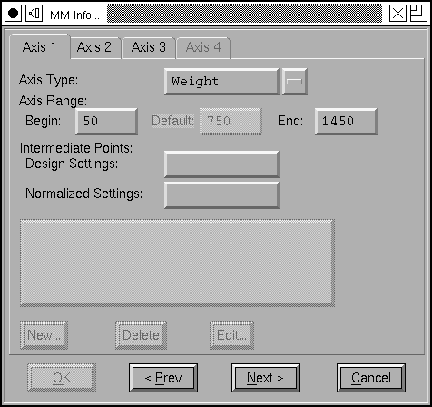
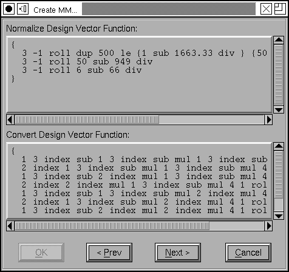
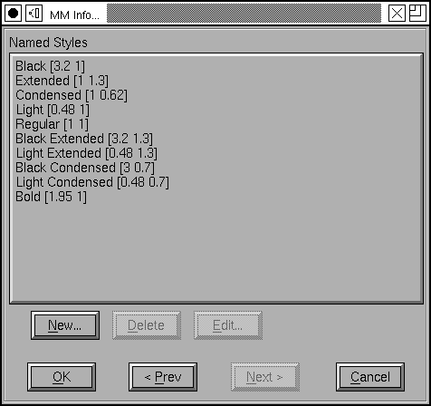
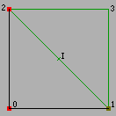

マルチプルマスターダイアログ
マルチプルマスターフォントの作成・変更ができます。
マルチプルマスターフォントとは何か?
マルチプルマスターフォントとは、(PostScript Type 1) フォントの一種で、1 個のフォント記述の中に、共通のフォントファミリーに属する数個の極端なスタイルのフォントと、中間的なデザインを生成するためにそれらを補間するコードを含んだものです。Apple は同様の概念を TrueType に応用しています——管見に入る限りではどれも「Apple 変形可能フォント」と呼んでいますが——ここでは両方ともマルチプルマスターと呼ぶことにします。
マルチプルマスターフォントは、変種を発生させることができる座標軸をいくつか持っています。例えば、あるフォントは Weight 軸 (Thin から Black までのすべて) の変種に加え、Width 軸 (Condensed から Extended) と、Optical Size 軸 (6pt から 72pt) を備えています。Type1 の仕様では、各軸ごとの極値のすべての組み合わせが存在する必要があります。上の例ではこうなるでしょう:
- Thin Condensed 6pt
- Thin Condensed 72pt
- Thin Extended 6pt
- Thin Extended 72pt
- Black Condensed 6pt
- Black Condensed 72pt
- Black Extended 6pt
- Black Extended 72pt
フォントデザイナーは中間デザインを追加することもできます。
これらの両極のデザインから、PostScript のラスタライザは欲しいスタイル (Normal Normal 12pt のような) を補間することができます。
Apple はわずかに異なるフォーマットを使っており、極限のデザインだけでなく、デフォルトのデザインも指定する必要があります (ですから、PostScript では軸ごとに 2 種類のデザインを必要とするのに対し、Apple は 3 種類のデザインを必要とします)。上の例では 27 種類のデザインとなるでしょう:
- Thin Condensed 6pt
- Thin Condensed 12pt
- Thin Condensed 72pt
- Thin 6pt
- Thin 12pt
- Thin 72pt
- Thin Extended 6pt
- Thin Extended 12pt
- Thin Extended 72pt
- Regular Condensed 6pt
- ...
- Black Extended 72pt
Apple もまた、中間デザインを認めていますが、FontForge は現在これをサポートしていません。
フォントデザイナーは、最初にいくつの軸が必要か決定する必要があります。PostScript では、Type1 フォントに最大 4 個の軸を使うことができます。FontForge は Apple のフォントに対しても 4 軸までしかサポートしていません。
それから、各軸に関する情報を提供します。特に、
- 軸のタイプ (ウェイト Weight、幅 Width、オプティカルサイズ Optical Size など)
-
その軸のデザイン値が変動できる範囲
典型的にはウェイトと幅では 1〜999 (1 が極限の細さまたは幅狭、999 は極限の太さまたは幅広)、またはオプティカルサイズでは 6〜72です。
Apple のフォントは異なるデフォルト範囲、0.05〜2.0 を使用しているようです。 -
デザイン値の定義域から範囲 [0, 1] への変換は正規化された範囲と呼ばれます。(Apple は [-1,1] の範囲に変換し、デフォルトのデザインは 0 になります)
この対応づけは部分ごとの線形変換です。一般的な場合は対応は自明 (1⇒0.0, 999⇒1.0) ですが、中間の点を追加することもでき、例えば 500⇒0.3 とした場合は、1〜500 の変換と、500〜999 の変換には違いが生じます。 - Apple 変形可能フォントでは、各軸には複数の言語に変換できる名前がつけられていなければなりません。
次に、デザインの個数を選びます。Type 1 フォントでは最大 16 個で、最低 2^軸の個数 となります。そのため、3 軸のフォントでは最低 8 個のデザインが、各極限の値につき 1 個必要となります。
Type1 フォントを作る場合、2 個の PostScript 関数を書く必要があります。
- NormalizeDesignVector
- FontForge はユーザに代わってこの関数を常に生成できます (ユーザが何らかの非線形の処理を必要とする場合を除く)。この関数はデザイン値のベクトルを正規化された値に変換します (先ほどの 3 軸の例では、[400 500 12] を [0.4 0.5 0.09] に変換することになります)。
- ConvertDesignVector
- 通常の場合は、FontForge はこの機能をユーザに代わって作成することができます (しかし、より複雑な、中間デザインが含まれる場合は自動作成できません)。この関数は正規化されたベクトル (上記のとおり生成されたもの) を取り、各デザインが、最終的な混ぜ合わせの結果にどれだけの重みを与えるかを返します。
最後に、デザインの重みづけのデフォルトベクトルを (各デザインごとに 1 つずつ) 提供しなければなりません。これは、マルチプルマスターフォントに何も追加情報を与えずに使用したときに用いられる重みづけです。ここにはフォントの通常版を記述するべきです。「通常」の定義として、[400 500 12] を取ったならば、このベクトルは [.273 .027 .273 .027 .182 .018 .182 .018] のようになるでしょう。
Apple 変形可能フォントは PostScript 関数を必要としませんし、上記のデフォルト重みづけベクトルも不要です。その代わり、デザイン空間に置ける特定の座標値を名前に対応づける、名前つきスタイルの組が必要になります (名前は複数の言語で指定することができます)。
各デザインにおける対応するグリフには、ある程度の類似性が必要です:
- 輪郭 (または参照) の個数が同じでなければならない
- 各輪郭には同じ個数の点が無ければならない
- 対応する輪郭は同じ方向を向いていなければならない
- Type1 フォントでは、ヒントおよびヒントが置換する点は対応していなければならない。
- TrueType フォントでは対応するグリフは同じ命令 (並びに‘fpgm’および‘prep’テーブル) を共有していなければならない。ただし、‘cvt ’テーブルは異なっていてもよい。
ダイアログ
このダイアログはマルチプルマスターフォントの作成と修正に用いられます。このダイアログは、順番に処理しなければならないいくつかのサブダイアログを含み、上で説明したプロセスに非常に密接に対応しています。まず最初に Adobe のフォントに対する手順を示し、次に Apple のフォントを説明します。
 最初の画面では、作成したい変形可能フォントのタイプ (Adobe マルチプルマスターまたは Apple)、フォントに含まれる軸の数、マスターデザインの個数およびファミリー名 (これは、新しいフォントが必要なときにそれを作成するのに用いられます) を選択することができます。
最初の画面では、作成したい変形可能フォントのタイプ (Adobe マルチプルマスターまたは Apple)、フォントに含まれる軸の数、マスターデザインの個数およびファミリー名 (これは、新しいフォントが必要なときにそれを作成するのに用いられます) を選択することができます。

2 番目の画面では、各軸の制御を行うことができます。Adobe (と Apple) によって定義された軸のタイプは 2, 3 種類しかありませんが、独自の軸を新しく定義することもできます。ここでは使用不可能になっている欄があることにご注意ください。それらは Apple のフォントでしか使用できません。
 次に、各マスターデザインに属するフォントを割り当てなければなりません。(この例のように) FontForge に新しいフォントを作成させることもできますし、既に読み込み済みのフォントを使用したり、ディスク上のフォントを使用するためにディレクトリを検索することもできます (同じフォントを 2 回使わないようにしてください)。
次に、各マスターデザインに属するフォントを割り当てなければなりません。(この例のように) FontForge に新しいフォントを作成させることもできますし、既に読み込み済みのフォントを使用したり、ディスク上のフォントを使用するためにディレクトリを検索することもできます (同じフォントを 2 回使わないようにしてください)。
このデザインの軸上での座標値を指定することもできます。もしデザインの個数を最少に抑えるならば、それらはすべて極値でとなり、座標値は 0 か 1 のどちらかになります。中間デザインの作業をするのでなければ、FontForge がこのフィールドを初期化するのに任せるのが最善です。

この画面に表示されているのは、デザインベクトルを重みベクトルに対応づけるのに必要な PostScript 関数です (言い替えれば、各デザイン軸での位置を指定したとき、これらは各マスターデザインからの混ぜ合わせの比率を生成します)。ほとんどの有益な場合では、FontForge はこれらの関数を自動生成しますが、中間デザインを使用したときには、FontForge で扱うには非常に複雑になるので、関数を手動で入力しなければなりません。
 最後の画面が表示しているのは、デフォルトの重みづけ (これは直接入力することもできますし、デザイン軸に沿った座標値でも指定できます) および、プライベート辞書の項目 ForceBoldThreshold です。
最後の画面が表示しているのは、デフォルトの重みづけ (これは直接入力することもできますし、デザイン軸に沿った座標値でも指定できます) および、プライベート辞書の項目 ForceBoldThreshold です。
Apple 変形可能フォント
 ダイアログの見かけは非常によく似ていますが、2,3 の相違点があります。ダイアログの「軸」ペインで、その軸のデフォルト値と変換可能な名前を指定しなければなりません。
ダイアログの見かけは非常によく似ていますが、2,3 の相違点があります。ダイアログの「軸」ペインで、その軸のデフォルト値と変換可能な名前を指定しなければなりません。
 提言
Adobe の Type1 フォントは極限にあるデザインを全部指定する必要があるので、3 軸のマルチプルマスターフォントでは、8 種類のデザインが必要です。これは、Adobe が補間のみを使うことを想定しているからのようです。一方、多くの場合ではそれらのデザインのいくつを作成するのに補外を使用することができます。3 軸の場合、必要なデザインは 4 種類だけになります (基本デザインのために 1 個、および各軸のバリエーションを表すのに 1 個ずつ)。
私は、2 軸の場合のみを詳しく説明するつもりです (視覚化が簡単なので): Weight 軸が 50〜900, Width 軸が 100〜1000 の範囲で変動するフォントがあるとします。そして、Weight=50,Width=100, Weight=50,Width=1000 と Weight=900,Width=100 のフォントが作成済みだとします。それらをデザイン 0, 1, 2 と呼びましょう。ここで作成したいのは Weight = 900, Width=1000 のデザイン 3 です。

最初に中間デザインを作成する必要があります (これは後で削除します)。これを“I”と呼ぶことにします。FontForge の エレメント(L)→フォントの補間(L)... コマンドを使って、デザイン 1 から 2 の間の 50% に位置するデザインを生成してください (これは Weight=475, Width=550 となります)。それからデザイン 0 から デザイン“I”の延長上 200% に位置するもう一つのデザインを作成します。これが必要な極限のデザインとなります。
Adobe の Type2 デザインはこのアプローチを可能にする準備があったように思いますが、Type2 の仕様からマルチプルマスター関連の演算子が削除されてしまったので、この疑問の答えは不明です。